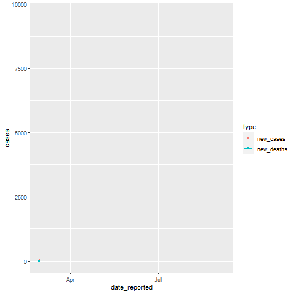

Background story
Mexico and the U.S are neighbours. Because the U.S is much more developed than Mexico, there are many illegal immigrants from Mexico go across the border and live and/or work in the U.S.. The drug trafficking in Mexico is notorious. They commit crimes and the government can do little about them. However, surprisingly, during the coronavirus pandemic, criminal cartels provide food to poors and help hospitals procure the necessary equipment (Pazzona 2020). This strange story occurs mainly because of two reasons. First, the Mexico government does not have the capacity to organise effective operations to help poor people or hospitals. Second, the gangs’ income is decreasing due the coronavirus pandemic. So, they eagerly want the society back to normal.
Like the U.S, the transmission classification in Mexico is community transmission as well. Community transmission means the government lacks capacity to control the coronavirus pandemic or the residents do not follow the rules.

Figure 1: Mexico and USA
